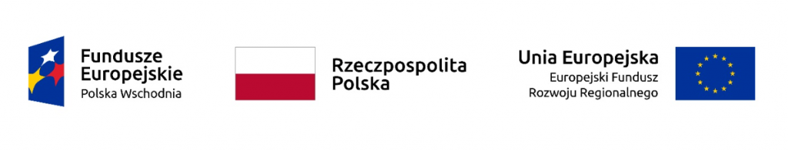

„Strategia wejścia na rynek zagraniczny firmy METBUD PRODUCTION SP. Z O.O. SP. K.”
Firma METBUD PRODUCTION SP. Z O.O. SP. K. realizuje projekt dofinansowany z Funduszy Europejskich.
Celem projektu jest stworzenie strategii wejścia na rynek zagraniczny firmy METBUD PRODUCTION SP. Z O.O. SP. K. Produktem końcowym wytworzonym w trakcie realizacji projektu będzie dokument opisujący strategię wejścia na rynek zagraniczny firmy.
Efektem prorozwojowej usługi doradczej będzie rozpoczęcie przez firmę procesu internacjonalizacji na wybrany rynek. Zawarte w strategii rekomendacje będą miały odzwierciedlenie w postaci konkretnych działań.
W wyniku realizacji projektu firma pozyska nowe lepiej płatne zlecenia zagraniczne, co przyczyni się do jej rozwoju. Rozwój firmy przełoży się w przyszłości na utworzenie nowych miejsc pracy w województwie podlaskim na potrzebę realizacji nowych zleceń, które wygenerują dodatkowy przychód.